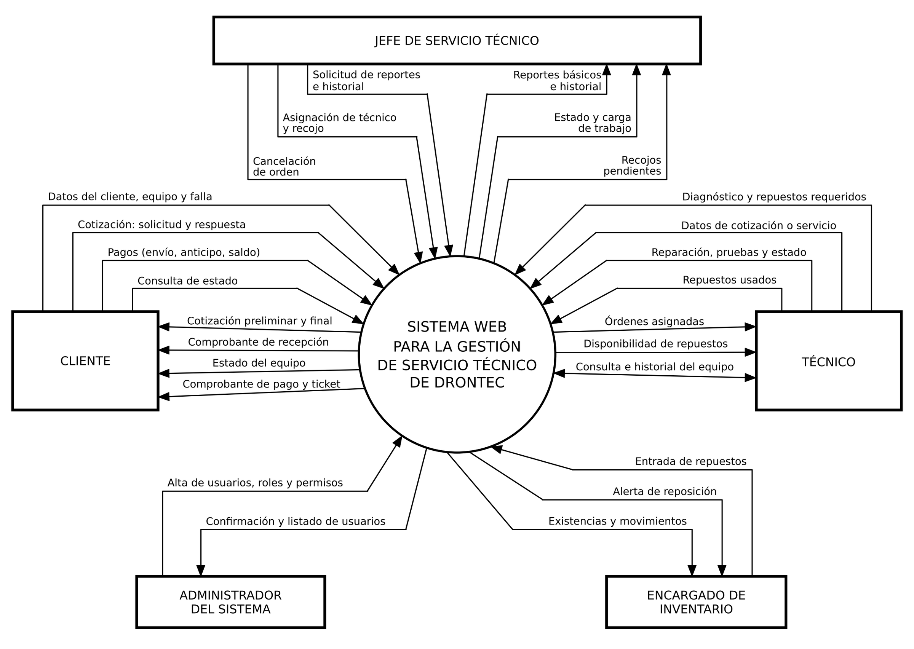
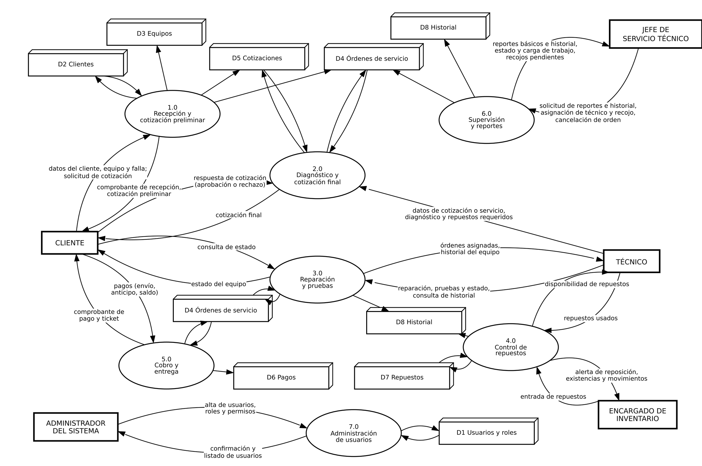
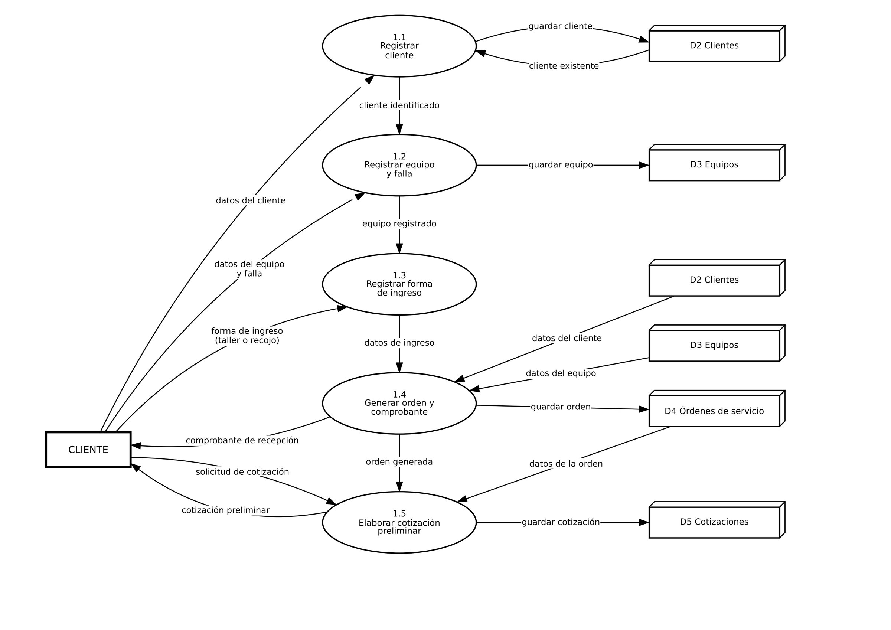
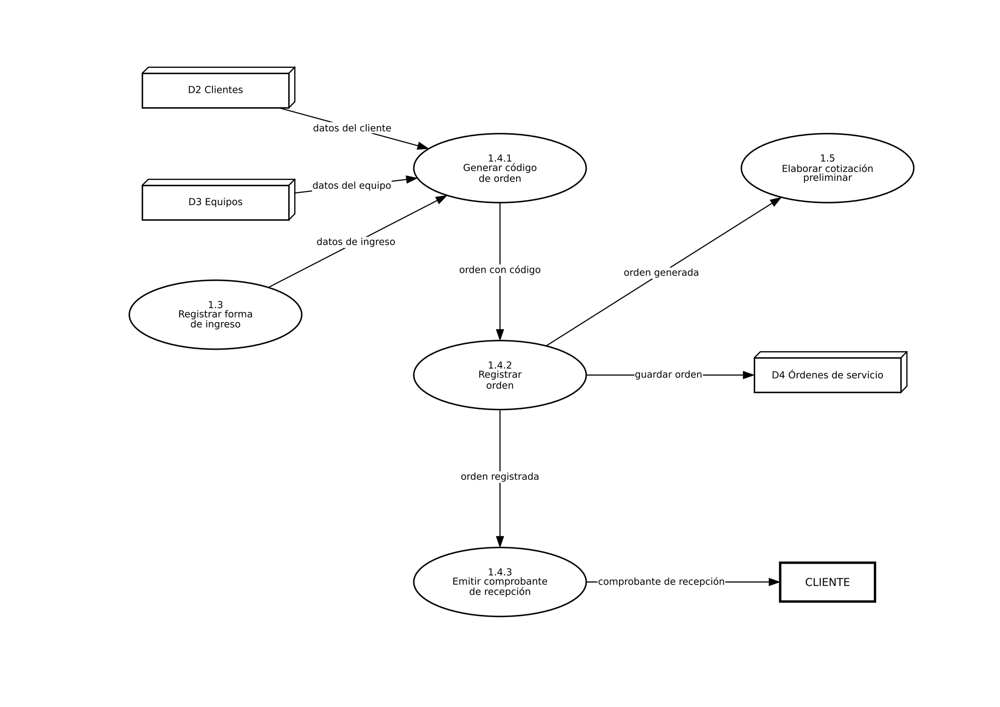
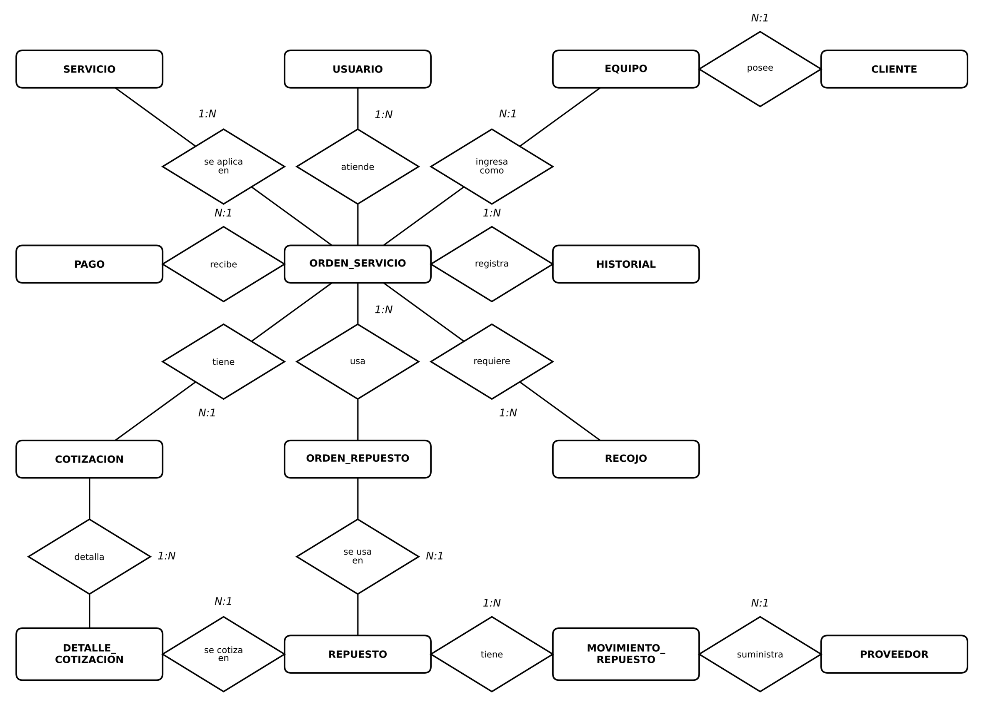
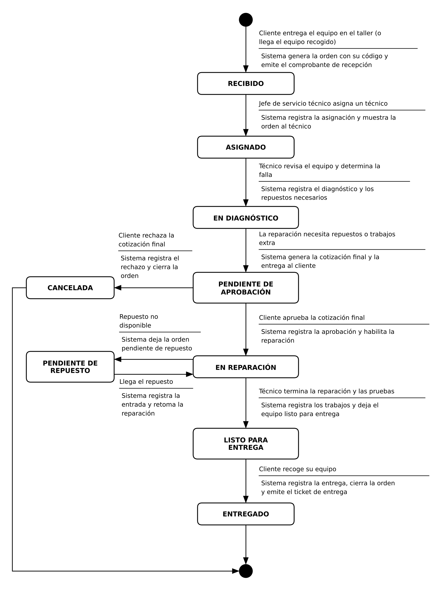

II. Análisis y diseño estructurado
Esta parte aplica el paradigma del análisis estructurado al sistema web para la gestión del servicio técnico de Drontec. Se desarrolla primero el modelo ambiental, que define la frontera del sistema y su relación con el entorno, y a continuación el modelo de comportamiento (diagramas de flujo de datos), el modelo de datos y el modelo de estados.
- 1. Modelo ambiental
- 2. Modelo de comportamiento
- 3. Diagrama entidad-relación
- 4. Diagrama de transición de estados
1. Modelo ambiental
1.1 Declaración de propósito
El sistema registra y da seguimiento a cada equipo que ingresa al servicio técnico de Drontec, desde la solicitud de cotización y el recojo hasta su entrega. Controla la asignación de técnicos, las cotizaciones, los repuestos y los pagos, para que cualquier persona del taller conozca el estado de cada trabajo.
No incluye ventas, alquiler de equipos, servicios de ingeniería, facturación con el SIN ni integración con WhatsApp.
1.2 Diagrama de contexto
El diagrama de contexto representa todo el sistema como un único proceso y muestra con qué entidades externas se comunica y qué datos intercambia con cada una. Cada flecha es un flujo de datos y su punta indica el sentido: hacia el sistema es una entrada y hacia la entidad es una salida. Para que el diagrama se lea con claridad, algunos flujos se presentan agrupados (por ejemplo, “Pagos” reúne el pago del envío, el anticipo y el saldo) y el ingreso con credenciales, con el acceso según el rol, no se dibuja porque aplica a las cuatro entidades del taller. La tabla 1 detalla cada flujo, y el diagrama se presenta en la figura 1.
Tabla 1. Flujos de datos del diagrama de contexto, por entidad externa
| Entidad externa | Entradas al sistema | Salidas del sistema |
|---|---|---|
| Cliente | Solicitud de cotización preliminar Respuesta a la cotización preliminar Pago de envío (efectivo o QR) Datos del cliente, equipo y falla Respuesta a la cotización final Pago de anticipo o saldo (efectivo o QR) Consulta de estado |
Cotización preliminar Comprobante de recepción Cotización final Estado del equipo Comprobante de pago Ticket de entrega |
| Técnico | Diagnóstico y repuestos requeridos Datos de la cotización final Servicios con precio establecido Trabajos, pruebas y cambio de estado Repuestos usados Consulta de historial (ida) Credenciales de acceso (ida) |
Órdenes asignadas Disponibilidad de repuestos Historial del equipo (vuelta) Acceso según rol (vuelta) |
| Jefe de servicio técnico | Asignación de técnico Programación de recojo Cancelación de orden Solicitud de reportes Consulta de historial (ida) Credenciales de acceso (ida) |
Órdenes por estado y carga de trabajo Reportes de órdenes, repuestos y pagos Solicitudes de recojo pendientes Historial de órdenes y pagos (vuelta) Acceso según rol (vuelta) |
| Encargado de inventario | Entrada de repuestos (código, descripción, cantidad y ubicación) Credenciales de acceso (ida) |
Alerta de reposición Reporte de existencias y movimientos Acceso según rol (vuelta) |
| Administrador del sistema | Alta de usuarios, roles y permisos Credenciales de acceso (ida) |
Confirmación y listado de usuarios Acceso según rol (vuelta) |

1.3 Lista de acontecimientos
Un acontecimiento es algo que ocurre fuera del sistema y al que este debe responder. Se incluye además un acontecimiento temporal (el 12), que el propio sistema detecta con el paso del tiempo o al alcanzar una condición. Los acontecimientos van ordenados según el recorrido del equipo.
Tabla 2. Lista de acontecimientos
| N.º | Acontecimiento | Entidad | Respuesta del sistema | Tipo |
|---|---|---|---|---|
| 1 | Una persona (de la ciudad o de otro departamento) pide una cotización preliminar enviando fotos y una descripción de la falla. | Cliente | Registra la solicitud (contacto, equipo y falla), genera la cotización preliminar como precio estimado no vinculante y se la entrega. | Externo |
| 2 | El cliente responde a la cotización preliminar y, si acepta, pide el envío del equipo. | Cliente | Registra la respuesta. Si acepta, registra la solicitud de recojo, el costo de envío y su pago (efectivo o QR), y emite el comprobante de envío. | Externo |
| 3 | El jefe programa el recojo del equipo en la dirección del cliente. | Jefe de servicio técnico | Registra fecha, responsable y estado “en recojo”, y mantiene la lista de recojos pendientes. | Externo |
| 4 | El cliente lleva el equipo al taller, o el equipo recogido llega al taller. | Cliente | Registra cliente, equipo, accesorios, falla y forma de ingreso (en persona o por recojo). Genera la orden con su código y emite el comprobante de recepción. | Externo |
| 5 | El jefe decide qué técnico se encarga de una orden. | Jefe de servicio técnico | Registra la asignación (y las reasignaciones, si las hay) y muestra la orden al técnico. | Externo |
| 6 | El técnico revisa el equipo y determina la falla. | Técnico | Registra el diagnóstico y los repuestos necesarios, y actualiza el estado. | Externo |
| 7 | El servicio tiene un precio establecido (por ejemplo, una limpieza). | Técnico | Registra el servicio con su precio, sin exigir cotización. | Externo |
| 8 | La reparación necesita repuestos o trabajos adicionales. | Técnico | Genera la cotización final ligada a la orden (confirma o ajusta la preliminar, si la hubo), la entrega al cliente y deja la orden pendiente de aprobación. | Externo |
| 9 | El cliente responde a la cotización final (aprueba, rechaza o aún no responde). | Cliente | Registra la respuesta y actualiza el estado de la orden. | Externo |
| 10 | El técnico necesita un repuesto. | Técnico | Muestra la disponibilidad. Si hay, registra su uso y lo descuenta; si no, deja la orden pendiente de repuesto. | Externo |
| 11 | Llega o se incorpora un repuesto. | Encargado de inventario | Registra la entrada (código, descripción, cantidad y ubicación) y actualiza las existencias. | Externo |
| 12 | Un repuesto llega a su nivel mínimo (el mínimo se define después). | Encargado de inventario (destinatario) | Emite la alerta de reposición. Es un acontecimiento temporal: lo detecta el propio sistema al comparar existencias con el mínimo. | Temporal |
| 13 | El técnico repara y prueba el equipo. | Técnico | Registra los trabajos, las pruebas y el cambio de estado hasta dejarlo listo para entrega. | Externo |
| 14 | El cliente consulta cómo va su equipo. | Cliente | Muestra el estado actual de la orden. | Externo |
| 15 | El cliente paga un anticipo o el saldo. | Cliente | Registra total, anticipo, saldo, fecha y método (efectivo o QR) y emite el comprobante de pago. | Externo |
| 16 | El cliente recoge su equipo. | Cliente | Registra la entrega (fecha, quién recibió y accesorios devueltos), cierra la orden y emite el ticket de entrega. | Externo |
| 17 | Se cancela una orden. | Jefe de servicio técnico | Registra la cancelación, su fecha y el cambio de estado. | Externo |
| 18 | Se necesita ver el avance y la carga de cada técnico. | Jefe de servicio técnico | Muestra las órdenes por estado y por técnico. | Externo |
| 19 | Se consulta el historial de un cliente o de un equipo (por ejemplo, un cliente frecuente que vuelve). | Jefe de servicio técnico / Técnico | Muestra sus órdenes y pagos anteriores. | Externo |
| 20 | Se necesita un reporte por día, semana, mes o año (por ejemplo, qué modelos se reparan más). | Jefe de servicio técnico | Genera el reporte básico de órdenes, repuestos o pagos. | Externo |
| 21 | Se incorpora una persona al taller o cambian sus permisos. | Administrador del sistema | Registra la cuenta, el rol y los permisos, y confirma el alta. | Externo |
| 22 | Una persona del taller intenta ingresar al sistema. | Técnico, jefe, encargado o administrador | Valida sus credenciales y le muestra solo lo que su rol permite. | Externo |
1.4 Supuestos y puntos por confirmar con Drontec
Para completar el modelo se adoptaron los siguientes supuestos, que deben validarse con la empresa:
La cotización preliminar es un precio estimado y no vinculante; el precio definitivo se fija con la cotización final tras el diagnóstico.
El envío del equipo lo coordina el jefe de servicio técnico, y el cliente paga el costo de envío una vez que acepta la cotización preliminar.
La devolución del equipo a un cliente de otro departamento (envío de retorno) queda por definir con Drontec; por ahora la entrega se registra como recojo en el taller.
El cliente consulta el estado de su equipo con el código de su orden, que figura en el comprobante de recepción.
Los pagos se registran en efectivo o por QR; no hay integración con el Servicio de Impuestos Nacionales (SIN) ni con WhatsApp.
El nivel mínimo de existencias de cada repuesto se definirá más adelante.
2. Modelo de comportamiento
2.1 Diagrama de flujo de datos de nivel 0
El diagrama de nivel 0 descompone el proceso único del diagrama de contexto en los siete procesos principales del sistema, y muestra los almacenes de datos que utilizan. Los flujos entre las entidades externas y el sistema son los mismos del diagrama de contexto, de modo que ambos diagramas están balanceados; solo se reparten entre los procesos que los reciben o los emiten. Dos flujos del contexto se dividen según el proceso: “Cotización: solicitud y respuesta” aparece como “Solicitud de cotización” (proceso 1.0) y “Respuesta de cotización” (proceso 2.0), y “Cotización preliminar y final” aparece como “Cotización preliminar” (1.0) y “Cotización final” (2.0). Cuando una entidad envía o recibe varios datos por el mismo camino, se agrupan en una sola flecha separados por comas. Los almacenes D4 (Órdenes de servicio) y D8 (Historial) aparecen dos veces para no cruzar líneas, pero cada uno es un único almacén; en los almacenes, la flecha indica si el proceso lo lee, lo escribe o ambas cosas.
Tabla 3. Procesos del diagrama de flujo de datos de nivel 0
| N.º | Proceso | Descripción |
|---|---|---|
| 1.0 | Recepción y cotización preliminar | Registra al cliente, el equipo y la falla; genera la orden con su código, gestiona el recojo cuando corresponde y emite el comprobante de recepción y la cotización preliminar. |
| 2.0 | Diagnóstico y cotización final | Recibe el diagnóstico y los repuestos requeridos, fija la cotización final y registra la aprobación o el rechazo del cliente. |
| 3.0 | Reparación y pruebas | Entrega las órdenes asignadas al técnico, registra el trabajo, las pruebas y los cambios de estado, y atiende las consultas de estado y de historial del equipo. |
| 4.0 | Control de repuestos | Registra las entradas de repuestos y los repuestos usados, informa su disponibilidad y emite la alerta de reposición y el reporte de existencias y movimientos. |
| 5.0 | Cobro y entrega | Registra los pagos (envío, anticipo y saldo), emite el comprobante de pago y el ticket de entrega, y cierra la orden. |
| 6.0 | Supervisión y reportes | Permite al jefe de servicio técnico asignar técnico y recojo, cancelar órdenes y obtener reportes, historial, carga de trabajo y recojos pendientes. |
| 7.0 | Administración de usuarios | Registra usuarios, roles y permisos, y controla el acceso al sistema según el rol. |
Tabla 4. Almacenes de datos
| Id | Almacén | Contenido |
|---|---|---|
| D1 | Usuarios y roles | Usuarios del sistema, roles, permisos y credenciales. |
| D2 | Clientes | Datos de los clientes (nombre, contacto, procedencia). |
| D3 | Equipos | Equipos recibidos: tipo, marca, modelo, accesorios y falla declarada. |
| D4 | Órdenes de servicio | Órdenes con su código, estado, técnico asignado, recojo y entrega. |
| D5 | Cotizaciones | Cotizaciones preliminares y finales, con su aprobación o rechazo. |
| D6 | Pagos | Envío, anticipo y saldo, con sus comprobantes y tickets. |
| D7 | Repuestos | Existencias de repuestos, ubicación y movimientos. |
| D8 | Historial | Historial de reparaciones, pruebas y repuestos usados por equipo. |

2.2 Diagrama de flujo de datos de nivel 1: proceso 1.0
El proceso 1.0 “Recepción y cotización preliminar” se descompone en cinco subprocesos que siguen el orden en que se atiende al cliente. El diagrama está balanceado con el nivel 0: el cliente envía y recibe los mismos flujos que llegan y salen del proceso 1.0 (datos del cliente, equipo y falla, forma de ingreso, solicitud de cotización, comprobante de recepción y cotización preliminar; en este nivel los datos de ingreso y de equipo se muestran por separado para identificar el subproceso que los recibe), y los almacenes D2, D3, D4 y D5 son los mismos del nivel 0. Los flujos entre subprocesos (cliente identificado, equipo registrado, datos de ingreso y orden generada) son internos y solo aparecen en este nivel.
Tabla 5. Subprocesos del proceso 1.0
| N.º | Subproceso | Descripción |
|---|---|---|
| 1.1 | Registrar cliente | Recibe los datos del cliente; si ya existe en D2 lo reutiliza, y si no, lo registra. |
| 1.2 | Registrar equipo y falla | Registra el equipo (tipo, marca, modelo, accesorios) y la falla declarada, y lo guarda en D3. |
| 1.3 | Registrar forma de ingreso | Registra si el equipo llega al taller o si se solicita recojo a domicilio. |
| 1.4 | Generar orden y comprobante | Reúne los datos del cliente, del equipo y del ingreso, genera la orden con su código, la guarda en D4 y emite el comprobante de recepción. |
| 1.5 | Elaborar cotización preliminar | Con los datos de la orden, atiende la solicitud de cotización del cliente, guarda la cotización en D5 y se la entrega. |

2.3 Diagrama de flujo de datos de nivel 2: proceso 1.4
El subproceso 1.4 “Generar orden y comprobante” se descompone en tres procesos. El diagrama está balanceado con el nivel 1: recibe “datos de ingreso” del proceso 1.3 y “datos del cliente” y “datos del equipo” de los almacenes D2 y D3; entrega “orden generada” al proceso 1.5, guarda la orden en D4 y envía el “comprobante de recepción” al cliente. Los flujos “orden con código” y “orden registrada” son internos de este nivel.
Tabla 6. Procesos del subproceso 1.4
| N.º | Proceso | Descripción |
|---|---|---|
| 1.4.1 | Generar código de orden | Reúne los datos de ingreso, del cliente (D2) y del equipo (D3) y asigna a la orden su código único. |
| 1.4.2 | Registrar orden | Guarda la orden con su código en D4 y la deja disponible para la cotización preliminar (proceso 1.5). |
| 1.4.3 | Emitir comprobante de recepción | Con la orden registrada, emite el comprobante de recepción que se entrega al cliente. |

3. Diagrama entidad-relación
El diagrama entidad-relación (DER) representa los datos que guardan los almacenes del DFD (D1 a D8). Siguiendo el estilo visto en clase, cada entidad se dibuja como un rectángulo con su nombre y cada relación como un rombo con el verbo que la nombra; los atributos de cada entidad se detallan aparte en la Tabla 9. La cardinalidad se escribe junto a cada rombo y se lee de la entidad de la izquierda (o de arriba) hacia la de la derecha (o de abajo): por ejemplo, “1:N” en “posee” significa que un cliente posee varios equipos, y “N:1” en “tiene” (cotización – orden) significa que varias cotizaciones pertenecen a una orden. Los usuarios del sistema (D1) corresponden a USUARIO; los clientes (D2) a CLIENTE; los equipos (D3) a EQUIPO; las órdenes (D4) a ORDEN_SERVICIO; las cotizaciones (D5) a COTIZACION; los pagos (D6) a PAGO; los repuestos y proveedores (D7) a REPUESTO, ORDEN_REPUESTO, MOVIMIENTO_REPUESTO y PROVEEDOR; y el historial (D8) a HISTORIAL. El catálogo de servicios (SERVICIO) y los recojos (RECOJO) se guardan junto con las órdenes (D4), y el detalle de cada cotización (DETALLE_COTIZACION) junto con las cotizaciones (D5).
Tabla 7. Entidades del DER
| Entidad | Descripción |
|---|---|
| USUARIO | Personal que usa el sistema (jefe de servicio técnico, técnico, encargado de inventario, administrador), con su rol y estado. |
| CLIENTE | Persona que entrega un equipo para su reparación. |
| EQUIPO | Equipo recibido de un cliente: tipo, marca, modelo y accesorios. |
| SERVICIO | Catálogo de servicios con precio establecido (por ejemplo, la limpieza), que no requieren cotización. |
| ORDEN_SERVICIO | Orden de reparación con su código, la falla declarada, la forma de ingreso (taller o recojo), el estado, el técnico asignado, el diagnóstico, los trabajos y pruebas, y los datos de la entrega. |
| RECOJO | Recojo del equipo en la dirección del cliente, con su fecha, responsable, estado y costo de envío. Se registra antes de la orden y se enlaza a ella cuando el equipo llega al taller. |
| COTIZACION | Cotización preliminar o final de una orden, con su monto total y su estado (aprobada, rechazada o pendiente). |
| DETALLE_COTIZACION | Ítems de una cotización: repuestos, mano de obra o trabajos adicionales, con su cantidad y precio. |
| PAGO | Pago de una orden: envío, anticipo o saldo. |
| HISTORIAL | Registro de los cambios de estado y de las acciones realizadas sobre una orden. |
| REPUESTO | Repuesto del inventario, con su existencia, existencia mínima, ubicación y precio. |
| ORDEN_REPUESTO | Repuestos usados en cada orden y su cantidad; resuelve la relación de muchos a muchos entre órdenes y repuestos. |
| MOVIMIENTO_REPUESTO | Entradas y salidas de cada repuesto del inventario; las entradas indican el proveedor. |
| PROVEEDOR | Proveedor que suministra repuestos al taller. |
Tabla 8. Relaciones del DER
| Entidades | Relación | Cardinalidad | Significado |
|---|---|---|---|
| CLIENTE – EQUIPO | posee | 1 : N | Un cliente puede entregar varios equipos; cada equipo pertenece a un cliente. |
| USUARIO – ORDEN_SERVICIO | atiende | 1 : N | Un técnico atiende varias órdenes; cada orden tiene un técnico asignado. |
| SERVICIO – ORDEN_SERVICIO | se aplica en | 1 : N | Un servicio con precio establecido puede aplicarse en varias órdenes; una orden puede tener uno. |
| EQUIPO – ORDEN_SERVICIO | ingresa como | 1 : N | Un equipo puede ingresar varias veces (varias órdenes); cada orden corresponde a un equipo. |
| ORDEN_SERVICIO – PAGO | recibe | 1 : N | Una orden puede tener varios pagos (envío, anticipo y saldo). |
| ORDEN_SERVICIO – HISTORIAL | registra | 1 : N | Cada cambio de estado de una orden queda registrado en el historial. |
| ORDEN_SERVICIO – COTIZACION | tiene | 1 : N | Una orden puede tener una cotización preliminar y una final. |
| ORDEN_SERVICIO – ORDEN_REPUESTO | usa | 1 : N | Una orden puede usar varios repuestos. |
| ORDEN_SERVICIO – RECOJO | requiere | 1 : N | Una orden que llega por recojo tiene su recojo programado (y reprogramado si hace falta). |
| COTIZACION – DETALLE_COTIZACION | detalla | 1 : N | Una cotización se compone de varios ítems. |
| REPUESTO – DETALLE_COTIZACION | se cotiza en | 1 : N | Un repuesto puede aparecer en varios ítems de cotización. |
| REPUESTO – ORDEN_REPUESTO | se usa en | 1 : N | Un repuesto puede usarse en varias órdenes. |
| REPUESTO – MOVIMIENTO_REPUESTO | tiene | 1 : N | Un repuesto tiene varios movimientos de entrada y salida. |
| PROVEEDOR – MOVIMIENTO_REPUESTO | suministra | 1 : N | Un proveedor suministra repuestos en varias entradas. |
Tabla 9. Atributos de las entidades (PK: llave primaria; FK: llave foránea)
| Entidad | Atributos |
|---|---|
| USUARIO | id_usuario (PK), nombre, usuario, contraseña, rol, estado |
| CLIENTE | id_cliente (PK), nombre, telefono, correo, procedencia |
| EQUIPO | id_equipo (PK), id_cliente (FK), tipo, marca, modelo, accesorios |
| SERVICIO | id_servicio (PK), nombre, descripcion, precio |
| ORDEN_SERVICIO | id_orden (PK), codigo, id_equipo (FK), id_tecnico (FK), id_servicio (FK, opcional), falla_declarada, forma_ingreso, estado, diagnostico, trabajos_realizados, pruebas, fecha_ingreso, fecha_entrega, recibido_por, accesorios_devueltos |
| RECOJO | id_recojo (PK), id_orden (FK), direccion, fecha_programada, responsable, estado, costo_envio |
| COTIZACION | id_cotizacion (PK), id_orden (FK), tipo, monto_total, estado, fecha |
| DETALLE_COTIZACION | id_detalle (PK), id_cotizacion (FK), id_repuesto (FK, opcional), descripcion, cantidad, precio_unitario |
| PAGO | id_pago (PK), id_orden (FK), tipo, monto, fecha |
| HISTORIAL | id_historial (PK), id_orden (FK), fecha, estado, descripcion |
| REPUESTO | id_repuesto (PK), nombre, stock, stock_minimo, ubicacion, precio |
| ORDEN_REPUESTO | id_orden (PK, FK), id_repuesto (PK, FK), cantidad |
| MOVIMIENTO_REPUESTO | id_movimiento (PK), id_repuesto (FK), id_proveedor (FK, opcional), tipo, cantidad, fecha |
| PROVEEDOR | id_proveedor (PK), nombre, telefono, correo, direccion |

4. Diagrama de transición de estados
El diagrama de transición de estados (DTE) representa las situaciones por las que pasa un objeto durante su ciclo de vida en el sistema. En este proyecto el objeto es la orden de servicio, desde que el equipo se recibe hasta que se entrega o se cancela. Siguiendo el estilo visto en clase, cada estado se dibuja como un rectángulo de esquinas redondeadas, el círculo negro de arriba es el inicio y el de abajo es el fin. Cada flecha es una transición y lleva dos textos separados por una línea: arriba, el acontecimiento que la provoca y, abajo, la acción con la que responde el sistema.
Tabla 10. Estados de la orden de servicio
| Estado | Significado |
|---|---|
| RECIBIDO | El equipo ya está en el taller y la orden fue generada con su código y su comprobante de recepción. Es el estado inicial. |
| ASIGNADO | El jefe de servicio técnico asignó un técnico a la orden. |
| EN DIAGNÓSTICO | El técnico revisa el equipo y determina la falla y los repuestos necesarios. |
| PENDIENTE DE APROBACIÓN | La cotización final fue entregada al cliente y se espera su respuesta. |
| EN REPARACIÓN | El cliente aprobó la cotización; el técnico repara y prueba el equipo. |
| PENDIENTE DE REPUESTO | Falta un repuesto; la reparación queda detenida hasta que llegue. |
| LISTO PARA ENTREGA | El equipo está reparado y probado, y espera que el cliente lo recoja. |
| ENTREGADO | El cliente recogió su equipo y la orden quedó cerrada. Es un estado final. |
| CANCELADA | La orden fue cancelada o el cliente rechazó la cotización final, y el equipo se devuelve sin reparar. Es un estado final. |
Para no recargar el diagrama se omiten dos casos que ya figuran en la lista de acontecimientos. Cuando el servicio tiene un precio establecido (acontecimiento 7), la orden pasa de EN DIAGNÓSTICO directamente a EN REPARACIÓN, sin cotización final. Y el jefe de servicio técnico puede cancelar una orden en cualquier momento antes de la entrega (acontecimiento 17), con lo que pasa a CANCELADA. La consulta de estado por parte del cliente (acontecimiento 14) no cambia el estado de la orden.
